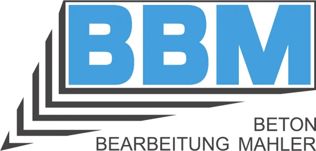
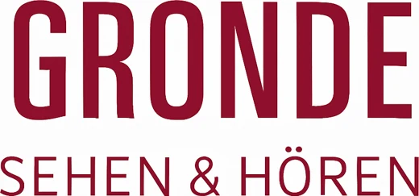
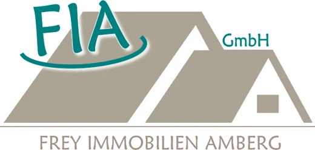
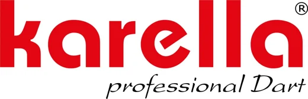

Offene Competition
Donnerstag
05.11.
ab 20:00 Uhr
Bismarck Bistro
Bismarckstraße 7, 86159 Augsburg
Steeldart in Augsburg · seit 1986
Offene Competition im Bismarck Bistro, für Einsteiger genauso wie für Ligaspieler. Einfach vorbeikommen oder kurz anmelden.
Bismarck Bistro
Bismarckstraße 7, 86159 Augsburg
Automatisch aus Liga-Ergebnissen und Competition-Kalender
CDA I · 2. Bundesliga Süd
Form: SSUSSU
| Pl. | Team | Pkt. |
|---|---|---|
| 1 | Clochard Darter Augsburg | 10 |
| 2 | DSC Bandits 1 | 9 |
| 3 | DVK 1 | 8 |
| 4 | DC Urbach | 8 |
| 5 | Darts Pub Walldorf | 6 |
Gemeldete Spielerinnen und Spieler
Vier Mannschaften, ein Verein. Wer in mehreren Teams gemeldet ist, steht in beiden Kadern.
Fotos und Kurzsteckbriefe folgen, sobald alle Spieler zugestimmt haben.
Antippen dreht die Karte um und zeigt den Steckbrief.Donnerstags-Competition · Bismarck Bistro
Alle drei Wochen zählt der Donnerstag für die Masters-Rangliste. Die besten 32 mit mindestens fünf Abenden spielen im Dezember die Finals, bei denen der ganze Masters-Pott ausgespielt wird.
Simulation: Die Saison 2026 ist komplett ausgedacht und zeigt, wie Rangliste und Statistiken nach dem neuen System aussehen. Die echte Saison startet am 07.01.2027.
Statistiken werden geladen …
5 € gehen am Abend als Preisgeld an die Top 3 (50 / 30 / 20 %). 10 € wandern in den Masters-Pott für die Finals.
Jeder dritte Donnerstag ist ein Masters-Abend: 501 Double-out. Je nach Teilnehmerzahl entscheidet die Turnierleitung: Gruppen mit anschließendem K.-o., Doppel-K.-o. (erst die zweite Niederlage scheidet aus) oder Single-K.-o. Die Siegerehrung erscheint am Ende auf allen Boards.
5 Punkte fürs Mitspielen, 2 für jeden Spieler, der hinter dir landet, 1 pro gewonnenem Match, dazu +10 / +6 / +3 für die Plätze 1 bis 3. Es zählen die besten 10 Abende.
Wer mindestens fünf Masters-Abende gespielt hat, ist qualifiziert. Bei den Finals dabei sind die besten 32 davon nach Masters-Punkten, gesetzt wird ebenfalls nach Punkten.
Beim TSV Dinkelscherben auf 6 Boards: Vorrunde in Vierergruppen, Zwischenrunde in Dreiergruppen, dann K.-o. Die Plätze 1 bis 6 werden alle ausgespielt.
Der Masters-Pott geht an die Top 5 der Finals: 40 / 25 / 17 / 12 / 6 %. Bei 15 Spielern im Schnitt kommen rund 2.400 € zusammen.
Jeder Abend ist spätestens um 23 Uhr fertig: Bei vielen Spielern kürzt das System automatisch die Legs, zuerst in der Gruppenphase. Alle Ergebnisse und Statistiken werden am Board direkt erfasst, auch an den Nicht-Masters-Abenden.
Ruhmeshalle wird geladen …
Einmal abonnieren, dann stehen alle Termine mit Spielmodus automatisch in deinem Handy-Kalender. Änderungen kommen von selbst nach.
iPhone: Link antippen und „Abonnieren“ wählen. Android / Google: alle Termine oder nur Masters in Google Kalender hinzufügen. Outlook: Link kopieren und unter „Kalender hinzufügen → Aus dem Internet“ einfügen.
Mitspielen · Donnerstags-Competition
Jeden Donnerstag spielen Mitglieder und Gäste im Bismarck Bistro eine offene Competition, Einsteiger genauso wie Ligaspieler. Melde dich vorher kurz an, dann kann die Turnierleitung den Abend planen. Gespielt wird mit unserem eigenen System: Jedes Board trägt die Würfe direkt ein, und Ergebnisse, Rangliste und Statistiken stehen sofort hier auf der Seite.
Ab dem 7. Januar 2027 läuft die neue Competition: jeder dritte Donnerstag ist ein CDA-Masters-Abend mit Rangliste, Preisgeld und Finals, dazwischen 501, 301 Double-In und Sonderabende wie Cricket, Lucky Doubles oder Bring a Friend. Welcher Modus wann gespielt wird, siehst du bei der Anmeldung.
Einmal deinen Namen antippen, danach bist du mit einem Tippen dabei. Dein Name wird auf diesem Gerät gemerkt.
Mitgliederliste wird geladen …
Wir speichern nur deinen Namen und deine Anmeldungen. Mehr in der Datenschutzerklärung.
Die Namen der Angemeldeten sind für alle sichtbar. Absagen geht mit dem Gerät, mit dem du dich angemeldet hast, sonst gib der Turnierleitung kurz Bescheid.
Mitglied in DDV, BDV und BLSV · gemeinnützig seit 1987
Chronik und Erfolge
Einer der ältesten Dartvereine Bayerns. Die wichtigsten Stationen aus 40 Jahren Vereinsgeschichte.
Wirt Wolfgang „Hebbe“ Herbst hängt im Stammlokal Clochard die ersten Scheiben auf. Der Grundstein des Vereins und seines Namens.
Am 1. November 1986 wird der Verein gegründet. 1987 folgen der Beitritt zu BDV und DDV und die Eintragung ins Vereinsregister.
Nach zwei Meisterschaften in der 1. NSDV-Liga spielt das erste Team in der neu gegründeten Bayernliga. Im selben Jahr richtet der CDA zum ersten Mal die Bayerischen Meisterschaften aus.
Team 1 wird Dritter in Deutschland und wiederholt das 1998. Im selben Jahr zieht der Verein ins Bismarck Bistro.
Nach mehreren Vizemeisterschaften gewinnt CDA I die Bayernliga 1998/99 und verteidigt den Titel 1999/00.
Die vom CDA ausgerichteten Meisterschaften finden ihre neue Heimat in der Singoldhalle.
CDA I wird Meister der Landesliga Süd. Ein Jahr später gewinnt das Team den BDV-8er-Cup und wird Dritter im DDV-Cup.
Dritter Bayerischer Mannschaftstitel und dazu der NSDV-Cup. In der Debütsaison 2025/26 folgen direkt Platz 3 und der Schwabenpokal.
Neue Heimspielstätte beim TSV Dinkelscherben und im Oktober die Tabellenspitze. Bei den Bayerischen Meisterschaften gewinnt Bastian Rauh das Herren-Einzel, Franz Rötzsch wird Vizemeister und holt mit Steckermair den Titel im Herren-Doppel.
Hier fliegen die Pfeile
Seit 2026 trägt unser Bundesligateam hier seine Heimspieltage aus, in Kooperation mit dem TSV Dinkelscherben 06 e.V.
Unser Vereinslokal seit 1998. Zwei Boards für Training, Ligaspiele und die offene Competition jeden Donnerstag ab 20 Uhr.
Route planenHeimspielort unserer 2. Mannschaft in der 1. Bezirksliga Schwaben. Hier spielte von 2023 bis 2025 auch unser Bayernliga-Team.
Route planenMitglied werden
Unkompliziert wie seit 1986: vorbeikommen, kennenlernen, Antrag ausfüllen – fertig. Als Mitglied spielst du in einer unserer vier Ligamannschaften, trainierst mit uns und bist bei allem dabei, was der Verein auf die Beine stellt.
Die Beiträge gelten je Geschäftsjahr vom 1. August bis 31. Juli. Ein Austritt ist zum Ende des Geschäftsjahres möglich und muss spätestens einen Monat vorher, also bis 30. Juni, schriftlich beim Vorstand eingehen.
Nein. Bei uns spielen Leute, die gerade erst angefangen haben, genauso wie Spieler aus der 2. Bundesliga. Die Competition ist offen für alle.
Nein. Die Donnerstags-Competition ist für alle offen. Melde dich einfach oben bei „Mitspielen“ kurz an oder komm vorbei. Mitglied werden kannst du, wann immer du willst.
Jeden Donnerstag von 20 bis 23 Uhr im Bismarck Bistro, Bismarckstraße 7, 86159 Augsburg. Die Heimspiele unserer Mannschaften findest du oben unter „Saison“.
Ja. Wir haben vier Ligamannschaften, angefangen bei der 2. Bundesliga Süd, da findet sich für jede Spielstärke ein Platz. Für das Ligaspiel kommen keine zusätzlichen Kosten auf dich zu.
70 € im Jahr für Erwachsene, 25 € für passive Mitglieder. Jugendliche bis zum 18. Geburtstag zahlen nichts. Das Geschäftsjahr läuft vom 1. August bis 31. Juli.
Du füllst den Aufnahmeantrag aus (oben als PDF, auch am Bildschirm ausfüllbar), unterschreibst ihn und gibst ihn bei Adi Seidl oder donnerstags im Bistro ab. Bei Minderjährigen unterschreiben alle Erziehungsberechtigten. Mit dem Antrag erkennst du unsere Satzung an. Austreten kannst du zum Ende des Geschäftsjahres am 31. Juli, die schriftliche Kündigung muss spätestens bis 30. Juni beim Vorstand sein.
An Leon Kesselring, am einfachsten per WhatsApp über den grünen Button. Oder sprich uns donnerstags im Bistro direkt an.
Ohne sie geht es nicht
Unsere Partner machen Auswärtsfahrten, Trikots und den Spielbetrieb in der 2. Bundesliga möglich.
Hauptsponsor
GW-TEC GmbH & Co. KG aus Augsburg unterstützt den Verein als Hauptsponsor.




Wir suchen Unternehmen aus der Region, die einen ambitionierten Augsburger Verein auf dem Weg nach oben begleiten.
Ansprechpartner: Leon Kesselring, Sponsorenbeauftragter
0175 4487070 · kesselring.leon@gmail.com
1984 hängt Wirt Wolfgang „Hebbe“ Herbst zwei Dartscheiben im Stammlokal Clochard auf. Am 1. November 1986 gründen neun Dartspieler daraus den Verein. Heute zählt der Verein rund 50 Mitglieder in vier Ligamannschaften.
Danach öffnet sich die Seite mit eigenem CDA-Symbol und ohne Browserleiste – wie eine App.